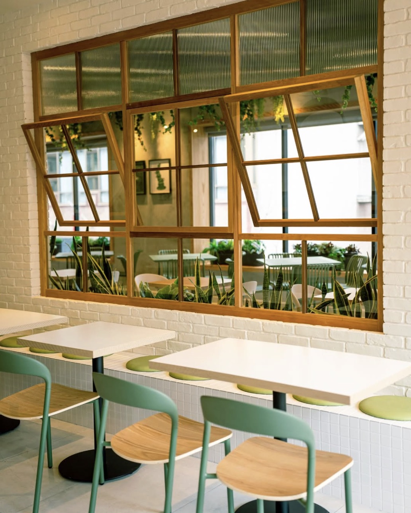
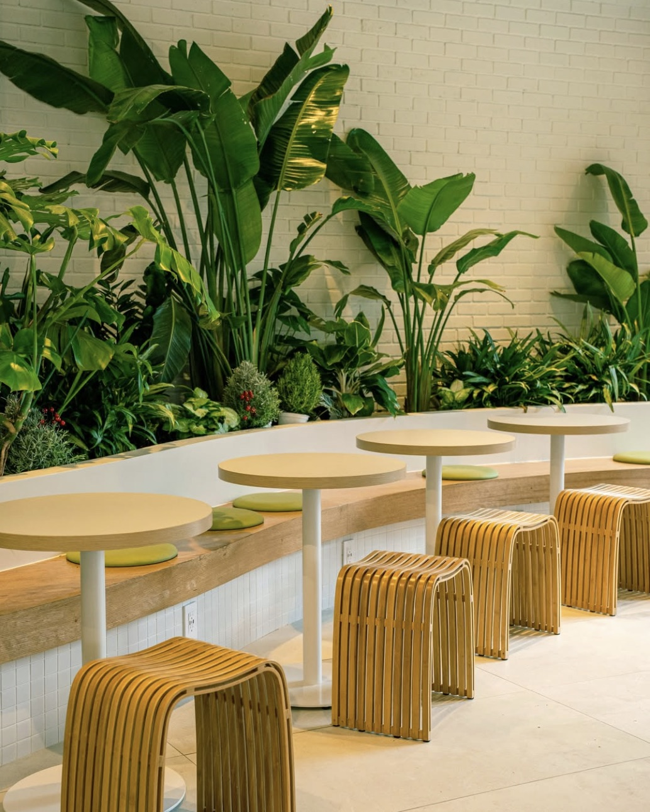
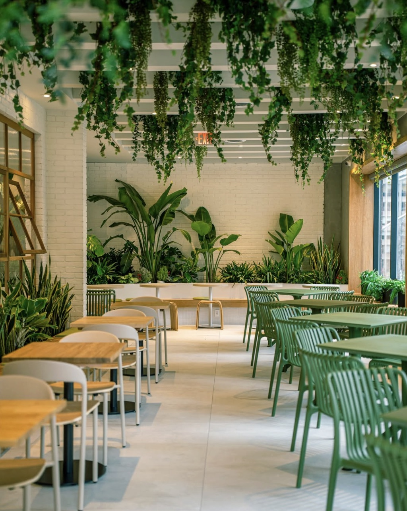

Overview
Cafe Foret is one of the most popular and visually appealing cafés in downtown Toronto. Known for its bright, plant-filled interior and aesthetic drinks, it attracts a mix of students, content creators, and casual visitors. While it’s a great place to study during quieter hours, its popularity means it can get busy later in the day.
Address
153 Dundas St W, Toronto, ON M5G 1C6
Hours
Open daily from 10am-10pm, best visited in the morning or early afternoon, and it gets busy during mid afternoon.
Outlets
Power outlets are available near select seating areas for your devices.
Wifi
Free Wi-Fi is available for customers, making it a convenient place to study or work. The Wi-Fi username and password are provided in-store.

Seatings
Cafe Foret offers a mix of seating options, though it leans more toward aesthetics than comfort where chairs are more stylish than comfortable. It’s best suited for short to medium study sessions rather than long hours.

Large Tables
Ideal seating with group studying.

Counter Seating
Ideal for solo studying.

Comfort Seating
Comfortable seating for longer sessions.
Food & Drinks
Info
Cafe Foret offers a range of specialty drinks and light food options that are both high quality and visually appealing.
- Specialty coffee: espresso, lattes, cappuccinos
- Matcha drinks (very popular on social media)
- Iced and aesthetic signature drinks
- Pastries and light desserts
The café is especially known for its Instagram-worthy drinks, making it a popular spot for both studying and social visits.
Atmosphere
Ambiance
The space is bright, modern, and filled with greenery, creating a calm and refreshing environment. Large windows bring in natural light, making it feel open and inviting.
- Plant-filled interior
- Minimalist, clean design
- Strong “Instagrammable” aesthetic
This makes it a great environment for both productivity and relaxing.
Quietness
Morning to early afternoon: relatively quiet and ideal for studying.
After 2–3 PM becomes much busier and louder.
Due to its popularity, noise levels increase as more people come for social visits and photos.
Music
Soft background café music.
Low volume and generally not distracting.
The music helps maintain a relaxed atmosphere without interfering with focus.
Personal Comment
Cafe Foret is a great spot for aesthetic solo studying, especially in the morning when it’s quieter and easier to find a good seat. The bright space and natural lighting make it a really enjoyable place to work. However, it gets much busier later in the day due to its popularity, I think it’s better for suited for shorter study sessions rather than long hours but it can also be long study sesstion if you don't mind it being busy after awhile. I think it's a good place to study with friends also a place to chat with friends to if you don't plan on studying.